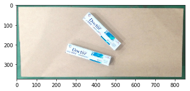
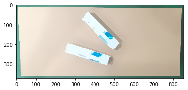
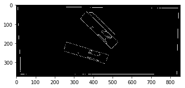
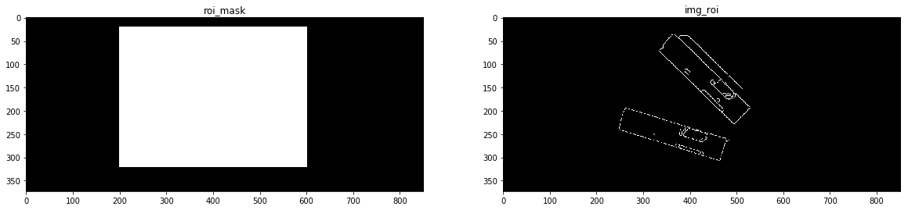
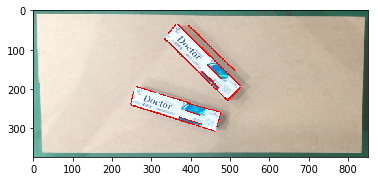
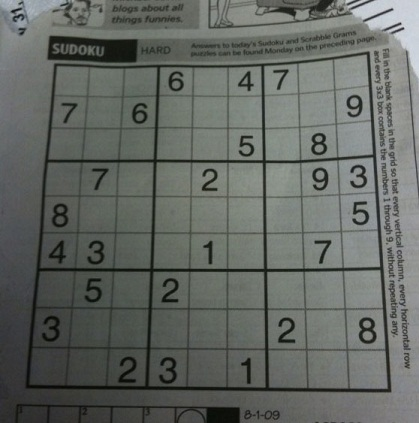
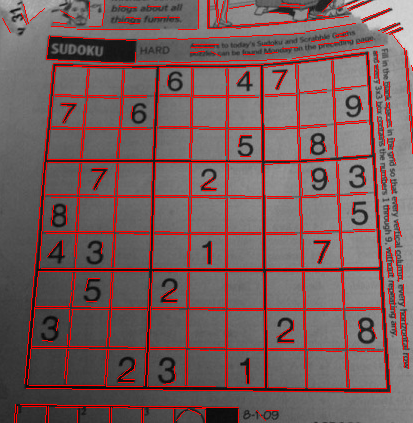

02-直线检测¶
- 实现思路
- 优化图片
- Canny算子提取边缘
- 裁剪图片，保留感兴趣区域
- 最终通过霍夫直线检测目标直线
初始化环境¶
导入依赖，并加载图片
import matplotlib.pyplot as plt
import numpy as np
import cv2
# 行内的形式显示图片
%matplotlib inline
src = cv2.imread("images/pic9.png")
img = np.copy(src)
img = cv2.cvtColor(img, cv2.COLOR_BGR2RGB)
plt.imshow(img)

进行图片优化¶
通过使用图片处理技术，抹去细节保留边缘
- 备选方案有：
- 形态学操作 morphologyEx
- 均值滤波 pyrMeanShiftFiltering
- 中值模糊 medianBlur
- 双边滤波 bilateralFilter
img2 = cv2.morphologyEx(img, cv2.MORPH_CLOSE, cv2.getStructuringElement(cv2.MORPH_RECT, (5, 5)))
img2 = cv2.pyrMeanShiftFiltering(img2, 20, 30)
# img2 = cv2.medianBlur(img, 5)
# img2 = cv2.bilateralFilter(img, 0, 30, 20)
plt.imshow(img2)

提取边缘¶
使用Canny算子设置 lower threshold, upper threshold提取边缘
lower = 150
upper = 255
dst = cv2.Canny(img2, lower, upper)
plt.imshow(dst, cmap='gray')

保留感兴趣区域ROI¶
h, w = img2.shape[:2]
roi = np.array([
[200, 20], [600, 20],
[600, 320],[200, 320]
], dtype=np.int32)
# 创建纯黑的原图掩膜
roi_mask = np.zeros([h,w], np.uint8)
# 填充ROI掩膜，将感兴趣区域填充成白色
cv2.fillPoly(roi_mask, [roi], 255)
# 通过像素位与操作保留刚刚掩膜中白色的区域
img_roi = cv2.bitwise_and(dst, roi_mask)
# 显示掩膜、提取后的图片
f, (ax1, ax2) = plt.subplots(1,2, figsize=(20,10))
ax1.set_title("roi_mask")
ax1.imshow(roi_mask, cmap='gray')
ax2.set_title("img_roi")
ax2.imshow(img_roi, cmap='gray')

霍夫直线检测目标直线¶
# ρ 霍夫变量，定义检测分辨率 1像素
rho = 1
# θ 霍夫变量，定义检测分辨率 1度
theta = np.pi / 180
# 在霍夫空间找到一根直线所需最小相交数的阈值
threshold = 20
# 线条的最小长度
min_line_length = 17
# 线条分段之间的最大距离
max_line_gap = 6
lines = cv2.HoughLinesP(img_roi, rho=rho, theta=theta,
threshold=threshold,
lines=np.array([]),
minLineLength=min_line_length,
maxLineGap=max_line_gap)
try:
rst = img.copy()
for index, line in enumerate(lines):
x1, y1, x2, y2 = line[0]
cv2.line(rst, (x1,y1), (x2,y2), (255, 0, 0), 2)
except:
print("No line")
plt.imshow(rst)

FLD直线检测¶
在OpenCV可扩充包的ximgproc模块中，提供了FLD快速直线检测工具（FastLineDetector）。
- 原图及结果如下


- 检测代码及输出
#include <iostream>
#include "opencv2/imgproc.hpp"
#include "opencv2/ximgproc.hpp"
#include "opencv2/imgcodecs.hpp"
#include "opencv2/highgui.hpp"
using namespace std;
using namespace cv;
using namespace cv::ximgproc;
int main(int argc, char** argv)
{
std::string in;
cv::CommandLineParser parser(argc, argv, "{@input|data/sudoku.jpg|input image}{help h||show help message}");
if (parser.has("help"))
{
parser.printMessage();
return 0;
}
in = parser.get<string>("@input");
Mat image = imread(in, IMREAD_GRAYSCALE);
if( image.empty() )
{
return -1;
}
// Create FLD detector
// Param Default value Description
// length_threshold 10 - Segments shorter than this will be discarded
// distance_threshold 1.41421356 - A point placed from a hypothesis line
// segment farther than this will be
// regarded as an outlier
// canny_th1 50 - First threshold for
// hysteresis procedure in Canny()
// canny_th2 50 - Second threshold for
// hysteresis procedure in Canny()
// canny_aperture_size 3 - Aperturesize for the sobel
// operator in Canny()
// do_merge false - If true, incremental merging of segments
// will be perfomred
int length_threshold = 10;
float distance_threshold = 1.41421356f;
double canny_th1 = 50.0;
double canny_th2 = 50.0;
int canny_aperture_size = 3;
bool do_merge = false;
Ptr<FastLineDetector> fld = createFastLineDetector(length_threshold,
distance_threshold, canny_th1, canny_th2, canny_aperture_size,
do_merge);
vector<Vec4f> lines_fld;
// Because of some CPU's power strategy, it seems that the first running of
// an algorithm takes much longer. So here we run the algorithm 10 times
// to see the algorithm's processing time with sufficiently warmed-up
// CPU performance.
for(int run_count = 0; run_count < 10; run_count++) {
double freq = getTickFrequency();
lines_fld.clear();
int64 start = getTickCount();
// Detect the lines with FLD
fld->detect(image, lines_fld);
double duration_ms = double(getTickCount() - start) * 1000 / freq;
std::cout << "Elapsed time for FLD " << duration_ms << " ms." << std::endl;
}
// Show found lines with FLD
Mat line_image_fld(image);
fld->drawSegments(line_image_fld, lines_fld);
imshow("FLD result", line_image_fld);
waitKey();
return 0;
}
output:
Elapsed time for FLD 10.8044 ms.
Elapsed time for FLD 10.2062 ms.
Elapsed time for FLD 11.273 ms.
Elapsed time for FLD 10.8076 ms.
Elapsed time for FLD 9.36518 ms.
Elapsed time for FLD 9.54557 ms.
Elapsed time for FLD 9.36083 ms.
Elapsed time for FLD 8.89453 ms.
Elapsed time for FLD 8.95119 ms.
Elapsed time for FLD 9.19344 ms.